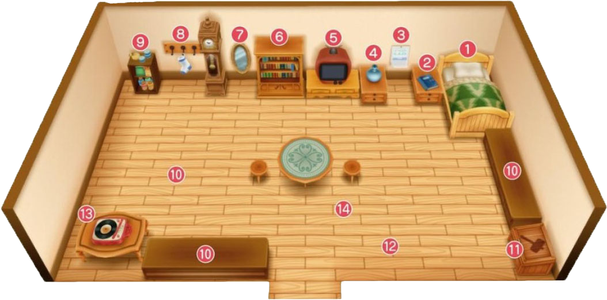

自宅
自宅作为主人公放松的场所，还有很多对牧场经营有用的物件。
在这里对这些物品的作用进行解说。
和牧场的设备相同，自宅也准备了许多设备。
能够回复体力的床，能够进行保存和读取的日记，
查看每月预定活动的日历还有各种收纳设施都很重要。
还有可以在「伐木之家」购买追加的设备。

- 床
最初拥有的设备。调查并选择「是」就可以睡觉。
睡觉可以一定量的回复体力和疲劳度，并且时间会推移到第二天早上6:00AM。
当天的工作完成后，就睡觉到第二天吧。
- 日记
调查后和菜单中「日记」相同，可以进行保存和读取。
选择「写日记」是保存，「读日记」是读取。
- 日历
调查后可以看到日历。日历中包括日期和星期，活动开办日和居民生日。
并且，不仅可以看到本月的日历，按R键可以查看下个月的日历。
- 花瓶
事件「旅行商人的拜访（花瓶）」中从霍安手中购买。
根据季节设置相应的花朵可以回复体力和疲劳度
- 电视
可以收看不同的电视频道。
在「伐木之家」可以新做功能相同看起来更豪华的「液晶电视」
- 书架
「书本一览」中可以查看至今为止的出货数和钓鱼成果，以及至今为止信箱中收到的信件和教学。
- 镜子
调查后可以更换主人公着装。共有12类服装可以选择。
如有购买特典DLC，还会追加另外五种服装。
- 袜子放置处
事件「爱莲的袜子」发生后，这里可以挂袜子。
之后「星夜赠礼」事件中会收到放在里面的礼物。
- 整理柜
可以收纳食物以外的道具。
满足条件后，可以升级为容量更大的「大整理柜」和「豪华整理柜」
- 冰箱
可以收纳食物以外的道具。
满足条件后，可以升级为容量更大的「大冰箱」和「豪华冰箱」
- 陈列空间
床下面的柜子是陈列空间，可以装饰特定的道具。
- 道具箱
和牧场外的道具箱相同，是用来收拾道具的箱子。
内部是联动的，收进去的道具在哪里的道具箱都可以取出来。
- 时钟
游戏画面右上角的单位是以10分作为单位显示的，但有时钟之后当前时间是可以精确到分钟的。
在「伐木之家」购买后设置。
- 留声机
从班先生处买入的设备。
拥有各种「唱片」的话，可以选择曲子变更BGM。
「唱片」也是从班先生这边买入的。
- 地毯
自宅扩建两次后，满足条件的话就可以在「伐木之家」买到。
没有特别的功能但是可以让室内装饰更添光彩。
可以观看的电视频道
电视节目基本上是按照星期来播送的。
跨年的时候由特定的节目放松。也有能够得到奖品的节目，挑战试试吧。
另外，镇上的别墅中有不一样的节目可以收看。
- 天气预报：可以查看第二天的天气
- 超美味时间
- 新年节目料理EX：可以学会料理配方
- 女神大人猜大小游戏
- 女神大人猜拳游戏
- 猜谜游戏：根据结果会得到奖品
花瓶中花朵的装饰效果
如果花瓶中装饰有花朵，并且当第二天起床时花仍然开着的话，就会得到加成效果。
超过花朵的寿命期后，100/256的概率会枯死。
如果想要持续的加成效果，就在花朵枯萎前换掉吧。
另外，如果装饰的花朵和季节不符，第二天就会枯萎。
需要装饰花朵或者替换装饰花朵的时候，就把花拿在手里接近并按 。
。
| 季节 |
花朵 |
效果 |
花的寿命 |
| 春 |
月落草 |
体力+10 |
7天 |
| 三色花 |
疲劳度-7 |
5天 |
| 夏 |
粉色猫薄荷 |
疲劳度-5 |
5天 |
| 秋 |
蓝色奇幻朱草 |
体力+3 |
10天 |
| 秋 | 朱草
疲劳度-10 |
5天 |
| 橘色维纳斯 |
疲劳度-20 |
2天 |
多种多样的装饰品
床和柜子的陈列空间可以装饰摆放下列道具。
床可以在能走动的地方设置摆放，柜子有两个，每个有3个摆放空间。
祭会优胜奖杯和居民的礼物这样的纪念品都可以摆放。
可以摆放的道具
- 斗鸡节冠军奖杯
- 评牛节冠军奖杯
- 软绵绵节冠军奖杯
- 小矮人的的雕像
- 女神的雕像
- 河童的雕像
- 海盗宝藏
- 古代鱼的化石
- 装信的瓶子
- 里克的手表
- 格雷的胸针
- 格雷的手镯
- 克里夫的花饰
- 多特的疗愈小物件
- 凯的海之守护
- 布兰登的微观作品
- 布兰登的爱的雕塑
- 珀布莉的泥丸子
- 让玛丽感动的书
- 卡莲的葡萄果汁
- 艾丽的押花
- 兰的八音盒
- 珍妮弗的香包
AM 4:44发生的奇怪的信息的真相
电视节目在AM 0:00后放送全部结束，到AM5:59为止都是颜色栏。
但是，在AM 4:44打开电视的话，伴随着白噪画面会有诡异的信息…………
内容会根据星期不同，周一到周六共有6种情况。
这些信息其实是解除诅咒道具的方法。
※ 到了AM 4:40后，出入自宅让时间一点点前进并在时钟上确认AM 4:44吧！